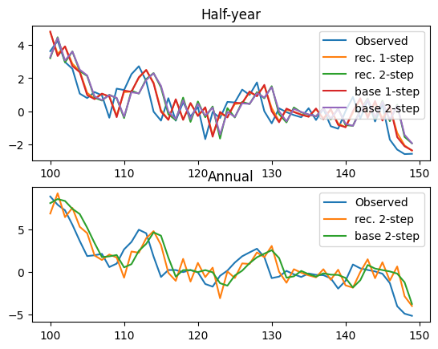
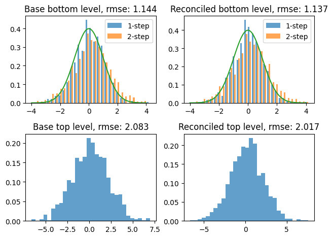

Hierarchy example
This notebook provides a toy example on how to perform hierarchical reconciliation using the PyOnlineForecast package.
It uses artificial data from an AR(2) process (Møller et al., 2024). The case uses a temporal hierarchy,
i.e. the “annual” level is defined in terms of the two past “half-year” observations. The notebook covers,
use of
TemporalRidgeReconciliationfor temporal hierarchies,use of
RidgeReconciliationfor general hierarchies
We begin by importing the simulated data and base forecasts,
[1]:
from py_online_forecast.datasets import sample_hierarchical_data as data
data.head()
[1]:
| Variable | Y_A | Y_H | pred_Y_A | pred_Y_H | |
|---|---|---|---|---|---|
| Horizon | 0 | 0 | 2 | 1 | 2 |
| 0 | -4.106624 | -2.899548 | -3.833273 | -2.652854 | -2.427148 |
| 1 | -5.258503 | -2.358955 | -4.913041 | -2.157604 | -1.973439 |
| 2 | -5.507629 | -3.148674 | -5.147808 | -2.882293 | -2.638449 |
| 3 | -6.273564 | -3.124891 | -5.869046 | -2.861292 | -2.619928 |
| 4 | -6.357276 | -3.232386 | -5.949235 | -2.960922 | -2.712257 |
The data is organized so that the i´th row contains the annual observations, \(Y_{A,i}\), half-year observations \(Y_{H,i}\), annual prediction \(\hat{Y}_{A, t+2}\) and half year predictions \(\hat{Y}_{H,i+1}\), \(\hat{Y}_{H,i+2}\).
To perform forecast reconciliation, we first use the TemporalRidgeReconciliation class to model the data directly as a temporal hierarchy. This means defining a summation matrix to encode the hierarchy, and a back-shift structure to map bottom level observations \(Y_{H,i}\), \(i = 1, 2, ...\) to the bottom level of the hierarchy, i.e. the vector \((Y_{H, i-1}, Y_{H, i})\). Behind the scens, the class uses RRR from the prediciton module. This means parameters are updated
recursively for every new row of data. When back-shifting the bottom level observations, we may choose to skip intermediate rows to avoid reusing data which would otherwise be duplicated for each lag. This behaviour is detailed in the BackShift transformation of the prediction module.
[2]:
import numpy as np
from py_online_forecast.hierarchies import TemporalRidgeReconciliation
# Define the summation matrix
S = np.array([[1, 1], [1, 0], [0, 1]])
S_top = S[[0]]
# Define the back-shift structure
B = [1, 0] # [Y_{H,t-1}, Y_{H,t-0}]
# Define the reconciler
temporal_reconciler = TemporalRidgeReconciliation(
S_top, # Summation matrix for top level
B, # Back-shift structure
full_cov=True, # Whether to estimate full covariance in bottom levels
skip_duplicates=True, # Whether to skip duplicate lagged data
opt_shrink=False, # Whether to use ``SRRR`` instead of ``RRR``
full_hierarchy_cov=False, # Whether to output full covariance matrix of hierarchy
)
# We also set the ForecastFormat to ensure outputs are formatted similarly to inputs
from py_online_forecast.forecast_tools import ForecastFormat
temporal_reconciler.set_format(ForecastFormat)
Note: by default,
TemporalRidgeReconciliationwill infer the prediction horizon based on the back-shift structure, as \(\max(B) + 1\). This behaviour can be overwritten by explicitly passing thehorizonargument.
To apply the reconciler, we can use the fit method,
[3]:
# Get the data
data_Y_hat = data[["pred_Y_A","pred_Y_H"]]
data_Y_bot = data[["Y_H"]]
# Fit the reconciler
res = temporal_reconciler.fit(data_Y_bot, data_Y_hat)
The result is a dict, with predicted means under the “mean” key,
[4]:
res["mean"].head()
[4]:
| Variable | pred_Y_A | pred_Y_H | |
|---|---|---|---|
| Horizon | 2 | 1 | 2 |
| 0 | NaN | NaN | NaN |
| 1 | NaN | NaN | NaN |
| 2 | NaN | NaN | NaN |
| 3 | -6.543789 | -3.352806 | -3.190983 |
| 4 | -6.429518 | -3.310783 | -3.118735 |
And predicted covariances under the “cov” key,
[5]:
res["cov"].head(9)
[5]:
| Variable | pred_Y_A | pred_Y_H | |
|---|---|---|---|
| Horizon | 2 | 1 | 2 |
| 0 | NaN | NaN | NaN |
| 1 | NaN | NaN | NaN |
| 2 | NaN | NaN | NaN |
| 3 | NaN | NaN | NaN |
| 4 | NaN | NaN | NaN |
| 5 | NaN | NaN | NaN |
| 6 | NaN | NaN | NaN |
| 7 | 0.001026 | 0.000823 | 0.000011 |
| 8 | 0.000748 | 0.000600 | 0.000008 |
The same results can be achieved in an online setting. We can test this, by emulating online updates, i.e. passing one new row of data at a time,
[6]:
import pandas as pd
# First, reset the state of the reconciler
temporal_reconciler.reset_state()
# Then, loop over rows in the data and update the reconciler one step at a time
result = []
result_cov = []
for t in range(len(data_Y_bot)):
Y_bot_t = data_Y_bot.iloc[[t]]
Y_hat_t = data_Y_hat.iloc[[t]]
rec_t = temporal_reconciler.update(Y_bot_t, Y_hat_t)
result.append(rec_t["mean"])
result_cov.append(rec_t["cov"])
# Concatenate the results
result_df = pd.concat(result)
result_cov_df = pd.concat(result_cov)
result_df.head()
[6]:
| Variable | pred_Y_A | pred_Y_H | |
|---|---|---|---|
| Horizon | 2 | 1 | 2 |
| 0 | NaN | NaN | NaN |
| 1 | NaN | NaN | NaN |
| 2 | NaN | NaN | NaN |
| 3 | -6.543789 | -3.352806 | -3.190983 |
| 4 | -6.429518 | -3.310783 | -3.118735 |
For structural hierarchies, the above approach is not applicable. Instead of a single bottom level observation, we are given observations on a set of bottom levels. We can demonstrate how reconciliation in such hierarchies is handled in the PyOnlineForecast package by first normalizing the input data. This is the same procedure, that the TemporalRidgeReconciliation object handles internally.
[7]:
from py_online_forecast.prediction import BackShift
# Manually apply the backshift operator
data_Y_bot_full = BackShift(B, skip_duplicates=True)(data_Y_bot)
# Print the first few rows of the back-shifted data
data_Y_bot_full[:5]
[7]:
array([[ nan, nan],
[-2.89954821, -2.35895524],
[ nan, nan],
[-3.14867357, -3.12489082],
[ nan, nan]])
Then we define a reconciler for the structural hierarchy,
[8]:
from py_online_forecast.hierarchies import RidgeReconciliation
reconciler = RidgeReconciliation(S_top, horizon = 2, opt_shrink = False)
reconciler.set_format(ForecastFormat)
rec_result = reconciler.fit(data_Y_bot_full, data_Y_hat)
# Check that the result is the same
rec_result["mean"].head()
[8]:
| Variable | pred_Y_A | pred_Y_H | |
|---|---|---|---|
| Horizon | 2 | 1 | 2 |
| 0 | NaN | NaN | NaN |
| 1 | NaN | NaN | NaN |
| 2 | NaN | NaN | NaN |
| 3 | -6.543789 | -3.352806 | -3.190983 |
| 4 | -6.429518 | -3.310783 | -3.118735 |
Both RidgeReconciliation and TemporalRidgeReconciliation are transformations and support the same methods. Furthermore, the data inputs, i.e. base forecasts and bottom level observations, can be configured as sources. In fact, the TemporalRidgeReconciliation is implemented by passing base forecasts and back-shifted observations as source inputs to the RidgeReconciliation class. The implementation is more or less,
[9]:
from py_online_forecast.core import Source
# Define sources
Z_bot = Source("Z_bot")
Y_hat = Source("Y_hat")
Y_bot_full = BackShift(B, skip_duplicates=True)
reconciler = RidgeReconciliation(S_top, Y_bot = Y_bot_full, Y_hat = Y_hat, horizon = 2, opt_shrink = False)
reconciler.set_format(ForecastFormat)
# Call the reconciler with the data (using the transfomation interface)
rec_result = reconciler({Y_bot_full: data_Y_bot_full, Y_hat: data_Y_hat})
rec_result["mean"].head()
[9]:
| Variable | pred_Y_A | pred_Y_H | |
|---|---|---|---|
| Horizon | 2 | 1 | 2 |
| 0 | NaN | NaN | NaN |
| 1 | NaN | NaN | NaN |
| 2 | NaN | NaN | NaN |
| 3 | -6.543789 | -3.352806 | -3.190983 |
| 4 | -6.429518 | -3.310783 | -3.118735 |
Finally, we can plot the results.
[10]:
import matplotlib.pyplot as plt
Y_hat_rec = rec_result["mean"]
data_Y_top = data[["Y_A"]]
n_start = 100
n_plot = 50
fig, (ax1, ax2) = plt.subplots(2, 1)
ax1.set_title("Half-year")
data_Y_bot.iloc[n_start:n_start + n_plot].plot(ax=ax1)
Y_hat_rec[["pred_Y_H"]].fc.lag().iloc[n_start:n_start + n_plot].plot(ax=ax1)
data_Y_hat[["pred_Y_H"]].fc.lag().iloc[n_start:n_start + n_plot].plot(ax=ax1)
ax1.legend(["Observed", "rec. 1-step", "rec. 2-step", "base 1-step", "base 2-step"])
ax2.set_title("Annual")
data_Y_top.iloc[n_start:n_start + n_plot].plot(ax=ax2)
Y_hat_rec[["pred_Y_A"]].fc.lag().iloc[n_start:n_start + n_plot].plot(ax=ax2)
data_Y_hat[["pred_Y_A"]].fc.lag().iloc[n_start:n_start + n_plot].plot(ax=ax2)
ax2.legend(["Observed", "rec. 2-step", "base 2-step"])
[10]:
<matplotlib.legend.Legend at 0x7102813cb860>

And the residuals
[11]:
from py_online_forecast.prediction import rmse
resid_base_bot = -data_Y_hat[["pred_Y_H"]].fc.lag().sub(data_Y_bot.to_numpy(), axis = 0)
resid_base_top = -data_Y_hat[["pred_Y_A"]].fc.lag().sub(data_Y_top.to_numpy())
resid_rec_bot = -Y_hat_rec[["pred_Y_H"]].fc.lag().sub(data_Y_bot.to_numpy(), axis = 0)
resid_rec_top = -Y_hat_rec[["pred_Y_A"]].fc.lag().sub(data_Y_top.to_numpy())
rmse_base_bot = rmse(resid_base_bot)
rmse_base_top = rmse(resid_base_top)
rmse_rec_bot = rmse(resid_rec_bot)
rmse_rec_top = rmse(resid_rec_top)
# Make histograms
fig, axes = plt.subplots(2, 2)
axes[0, 0].hist(resid_base_bot.dropna(), bins=30, alpha=0.7, density = True)
axes[0, 0].legend(["1-step", "2-step"])
axes[0, 0].set_title(f"Base bottom level, rmse: {rmse_base_bot:.3f}")
axes[0, 1].hist(resid_rec_bot.dropna(), bins=30, alpha=0.7, density = True)
axes[0, 1].legend(["1-step", "2-step"])
axes[0, 1].set_title(f"Reconciled bottom level, rmse: {rmse_rec_bot:.3f}")
# Also include gaussian with unity variance (true noise distribution) for reference
x = np.linspace(-4, 4, 100)
y = 1/np.sqrt(2 * np.pi) * np.exp(-0.5 * x**2)
axes[0, 0].plot(x, y)
axes[0, 1].plot(x, y)
# Top level
axes[1, 0].hist(resid_base_top.dropna(), bins=30, alpha=0.7, density = True)
axes[1, 0].set_title(f"Base top level, rmse: {rmse_base_top:.3f}")
axes[1, 1].hist(resid_rec_top.dropna(), bins=30, alpha=0.7, density = True)
axes[1, 1].set_title(f"Reconciled top level, rmse: {rmse_rec_top:.3f}")
plt.tight_layout()

[ ]: